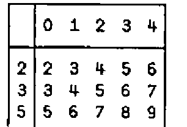
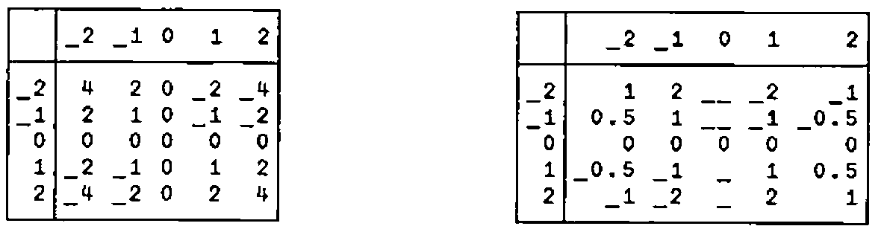
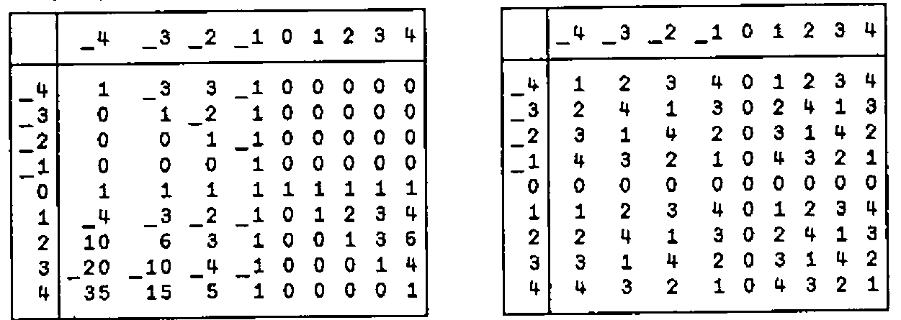
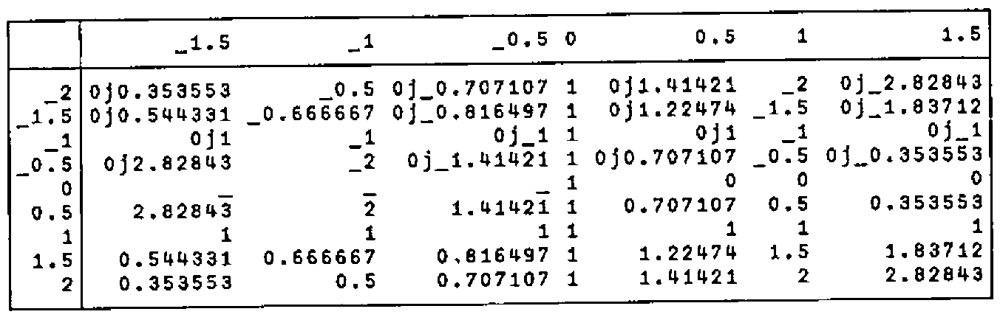
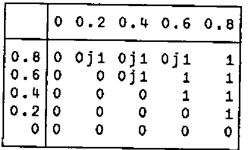
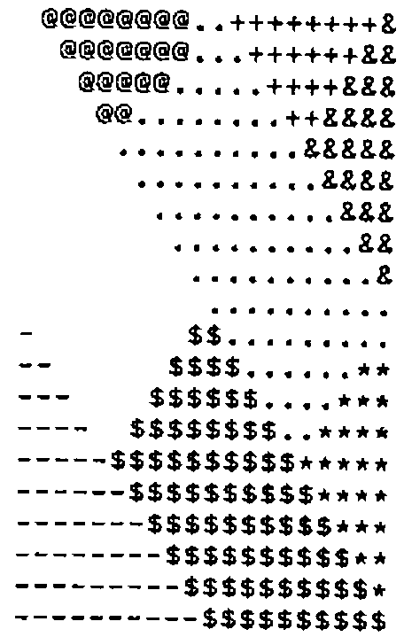
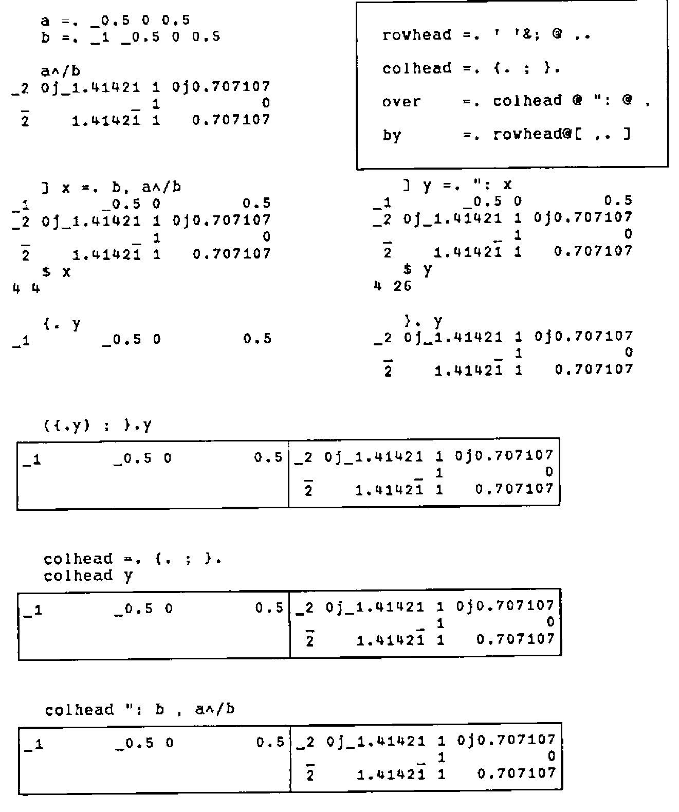
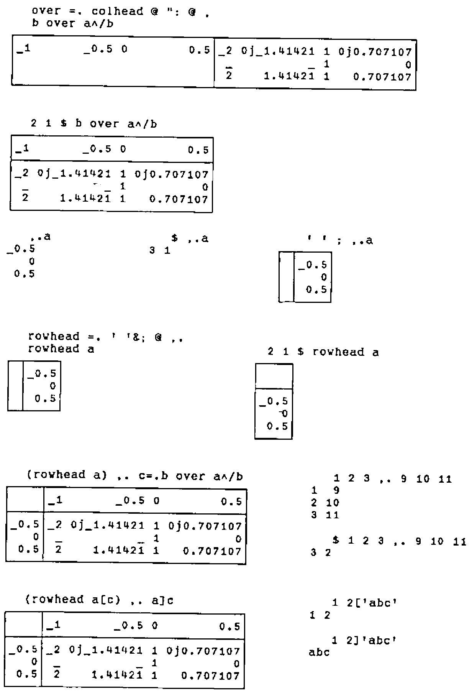
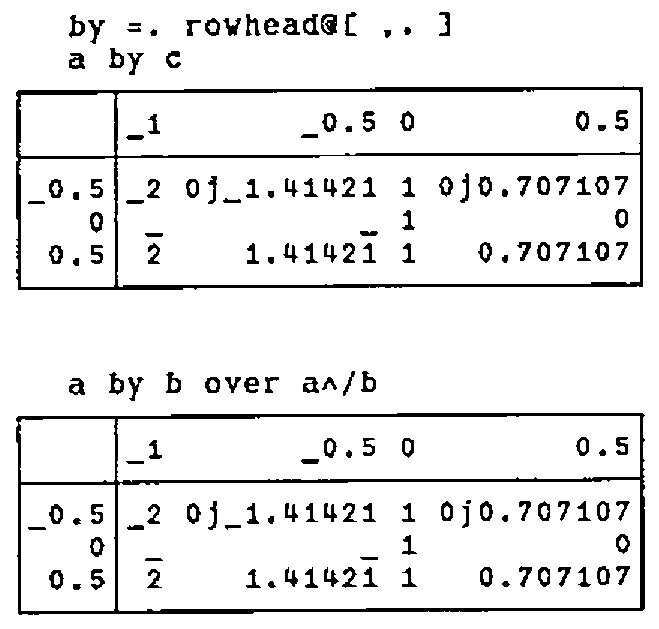

Verb Tables
Vector 8:4, page 91
Transcribed from the printed issue; not yet reviewed. Read it in the PDF of the issue, page 91
The verb tables produced by f/ in J (see Reference [1]; f/ is ∘.f in APL) are generalizations of the familiar addition and multiplication tables of arithmetic. The utility verbs over and by (defined and analyzed in the Appendix) are used to annotate verb tables. For example:

Verb tables facilitate systematic experimentation, and can reveal new patterns and new meanings even for familiar and seemingly quotidian verbs.
Cross (~) is an adverb such that f~y is y f y and x f~ y is y f x, and is useful in generating verb tables of a list against itself. Thus:

Note the pattern of signs in both the times (*) and divide (%) tables, the result of 0%0, and the infinite possibilities of dividing by 0 [3,4]. The signs of a real table t can be displayed using the expression ' +-'{~*t, using the signum (*) of t to select from ({) ' +-'. Tables of boolean verbs (truth tables) such as less than (<), and (*.), and or (+.) offer useful classifications.
Out of (!) produces binomial coefficients; !/ produces Pascal’s triangle. 5&|@* is multiplication modulo 5:


The power (^) table contains many subtle patterns. For example, examine the column headed by 0, and the rows headed by _1 and 0. The reader may wish to attempt the same table on other systems; the results may prove interesting.
The verb j. produces a complex number from its real and imaginary parts; thus 3 j. 4 is 3j4. The expression (|.y) <.@j.~/ y=.5%~i.5 produces a table of the verb <.@j.~ on the reverse (|.) of y against y itself; i.e., floor (<.) on the lower left corner of the first quadrant of the complex plane. The pattern is made more evident by mapping the result to single glyphs, using the symbols s=.' @.+&-$*=%'.


Thus, the floor of the complex plane is tiled by "sloping bricks" — unit-area rectangles inclined at minus 45°, whose long sides are the diagonal of the unit square [2]. map is a composition of two verbs, {&s (from bonded with s) atop the fork ~.@, i. ]; it works by computing the indices of the floor values in the nubbed ravel (~.@,) of such values, which are then used to select from s. Fork and atop are defined by the following diagrams:
(f g h) y x (f g h) y f@g y x f@g y
g g f f
/ \ / \ | |
f h f h g g
| | / \ / \ | / \
y y x y x y y x y
Appendix: over and by¶



References¶
[1] Iverson, K.E., ISI Dictionary of J, Version 4, 1991 12.
[2] McDonnell, E.E., Complex Floor, APL73 Conference Proceedings.
[3] McDonnell, E.E., Zero Divided by Zero, APL76 Conference Proceedings.
[4] McDonnell, E.E., and Shallit, J.O., Extending APL to Infinity, APL 80, North-Holland Publishing Company, 1980 6.